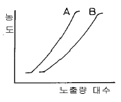
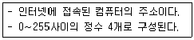
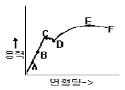
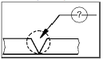
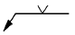
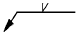
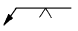

방사선비파괴검사산업기사(구) (2002-03-10 기출문제)
1과목: 방사선투과검사 시험
1. 감마선 조사 장치에 사용될 Ir-192 20Ci를 제조 후 200일이 경과되었다. 현재의 activity는 얼마가 되겠는가?
- 3.07Ci
- 5.23Ci
- 7.15Ci
- 12.2Ci
(정답률: 알수없음)

2. 방사선투과검사를 수행할 때 만족할만한 투과사진을 얻기 위한 설명중 틀린 것은?
- 선원의 유효크기는 가능한한 작아야 한다.
- 가능한한 방사선의 중심선이 필름에 수직토록 한다.
- 선원과 시험체사이의 거리는 가능한한 먼 것이 좋다.
- 시험체의 관심대상이 되는 면이 필름에 수직하도록 한다.
(정답률: 알수없음)
3. 방사선 투과사진의 콘트라스트(Contrast)에 대한 설명중 틀린 것은?
- 시험체의 두께 차이가 크면 콘트라스트는 높아진다.
- 필름 감마치가 크면 콘트라스트는 낮아진다.
- 방사선의 파장이 길어지면 콘트라스트는 낮아진다.
- 현상이 정확하면 콘트라스트는 높아진다.
(정답률: 알수없음)
4. 피사체 콘트라스트는 시험체의 두께차, 방사선의 선질 및 산란선에 영향을 받는다. 일반적으로 관전압이 상승하면 피사체 콘트라스트는?
- 증가한다.
- 감소한다.
- 변하지 않는다.
- 에너지 제곱에 비례하여 증가한다.
(정답률: 알수없음)
5. 방사선투과시험에 사용하는 X선 발생장치에 대한 설명으로 옳지 않은 것은?
- 장치에 사용되는 전류는 조정기를 통하여 쉽게 조정할 수 있다.
- 동일한 피크 전압 및 전류로 작동되는 경우에도 X선발생장치에 따라 X선 강도는 달라질 수 있다.
- 동일한 투과사진 농도를 얻기 위해서는 X선 발생장치의 노출도표를 작성하는 것이 바람직하다.
- 고전압 X선 장치는 일반적으로 노출 조건을 선정하기 위해 전압을 조정하게 되어 있다.
(정답률: 알수없음)
6. 방사선투과시험시 투과사진 콘트라스트를 ΔD, 식별 한계 콘트라스트를 ΔDmin라 할 때 다음 중 결함이 식별되지 않는 경우는?
- ΔD ＜ ΔDmin
- ΔD = ΔDmin
- ΔD ＞ ΔDmin
- ΔD/ΔDmin = 1.1인 경우
(정답률: 알수없음)
7. Ir-192 25Ci 선원을 사용하여 차폐체없이 방사선투과검사를 하고자 한다. 1주당 피폭선량을 100mR 이하로 하고자할 때 1주간 촬영 가능한 필름의 최대 매수는? (단, 선원과 작업자사이의 거리는 10m, 방사선투과사진 1매당 노출시간은 1분, 또한 Ir-192에 대한 RHM은 0.5)
- 24매
- 48매
- 72매
- 96매
(정답률: 알수없음)
8. 건식이나 속건식 침투탐상시험에서 건조처리는 언제하는 가?
- 침투처리후
- 유화처리후
- 세척처리후
- 현상처리후
(정답률: 알수없음)
9. 방사선투과시험에서 일반적으로 최하위의 등급으로 분류되는 결함은?
- 기공
- 터짐
- 용입부족
- 슬래그개입
(정답률: 알수없음)
10. 방사선투과검사에서 피사체 콘트라스트를 바르게 설명한 것은?
- 피사체를 투과한 X선의 강도비
- 피사체의 두께차
- 감광재료의 감도비
- 입사선과 산란선과의 강도비
(정답률: 알수없음)
11. X선 발생장치의 관전압과 투과사진 콘트라스트와의 관계에 대한 설명으로 올바른 것은?
- 관전압은 필름 입상성에만 관계한다.
- 관전압과 투과사진 콘트라스트는 무관하다.
- 관전압이 높아질수록 투과사진 콘트라스트가 높아진다.
- 관전압이 높아질수록 투과사진 콘트라스트가 낮아진다.
(정답률: 알수없음)
12. 방사선 투과사진의 콘트라스트를 나타내는 공식은?(단, μ : 흡수계수, Δx : 두께차, n : 산란비, γ : 필름콘트라스트, ΔD : 방사선 투과사진의 콘트라스트)
- ΔD = 0.434μγΔx / (1 + n)
- ΔD = μγΔx / {0.434 + (1 + n)}
- ΔD = -0.434μγΔx / (1 + n)
- ΔD = -μγΔx / {0.434 + (1 + n)}
(정답률: 알수없음)
13. 방사선투과검사시 투과사진 콘트라스트에 영향을 미치는 인자가 아닌 것은?
- 필름의 종류
- 산란 방사선
- 선원과 필름사이의 거리
- 현상도(degree of development)
(정답률: 알수없음)
14. 미세 방사선투과시험(micro radiography)에 사용되는 에너지 범위로 맞는 것은?
- 5∼50kV
- 60∼100kV
- 100∼150kV
- 150∼200kV
(정답률: 알수없음)
15. 휴대용 X선 발생장치에 관한 설명 중 맞는 것은?
- 음극에 텅스텐 표적이 있다.
- 양극에 집속관이 있다.
- 필라멘트는 양극에 있다.
- 양극은 일반적으로 구리로 만든다.
(정답률: 알수없음)
16. X선관 타겟(target)으로 부터 발생되는 X선 강도의 분포는?
- 0° 에서 가장 강하다.
- 양극쪽이 음극쪽보다 강하다.
- 음극쪽이 양극쪽보다 강하다.
- 각도에 관계없이 일정하다.
(정답률: 알수없음)
17. 다음 중 필름특성곡선(H&D Curve)으로 알 수 없는 것은?
- 관용도(Latitude)
- 필름감도(Film speed)
- 불선명도(Unsharpness)
- 필름 콘트라스트(film contrast)
(정답률: 알수없음)
18. 결함부에 대해 적합한 비파괴검사법을 연결한 것이다. 다음 중 틀린 것은?
- 강재의 표면결함 - 자분탐상시험법
- 경금속의 표면결함 - 침투탐상시험법
- 용접내부의 기공 - 와전류탐상시험법
- 단조품의 내부결함 - 초음파탐상시험법
(정답률: 알수없음)
19. 방사선 투과사진의 두 지점 농도차에 대한 설명으로 맞지 않는 것은?
- 필름 콘트라스트에 정비례한다.
- 흡수계수에 역비례한다.
- 방사선 산란비에 역비례한다.
- 기하학적 보정계수에 정비례한다.
(정답률: 알수없음)
20. 다음 방사성 동위원소중 비방사능이 가장 큰 선원은?
- Tm -170
- Ir-192
- Cs -137
- Co-60
(정답률: 알수없음)
2과목: 방사선투과검사 시험
21. DIN(독일규격)의 투과도계는 어떤 형으로 되어 있는가?
- 요철형
- 선형
- 계단형
- 간접상질 지시형
(정답률: 알수없음)
22. 다음 중 방사선이 시험체에 흡수될 때 가장 적게 영향을 미치는 것은?
- 시험체의 결정립
- 시험체의 두께
- 시험체의 밀도
- 시험체의 원자번호
(정답률: 알수없음)
23. 전자가 빠른 속도로 어떤 물질에 부딪혀서 발생되는 아주 짧은 파장의 전자파 방사선을 무엇이라 하는가?
- α선
- β선
- γ선
- X선
(정답률: 알수없음)
24. X선 투과상을 형광판에서 가시상으로 변환하여 카메라 등으로 필름에 촬영하는 방법은?
- 형광 증배관법
- 직접 촬영법
- 간접 촬영법
- 투과 사진법
(정답률: 알수없음)
25. 시험체-필름간 거리가 5.0인치, 선원-시험체간 거리가 43.0인치이고 선원의 크기가 3.0㎜일 때 기하학적 불선명도 Ug 값을 구하면?
- 0.020인치
- 0.028인치
- 0.014인치
- 0.006인치
(정답률: 알수없음)
26. 다음 중 피사체 콘트라스트에 영향을 주지 않는 인자는?
- 시험체의 두께차
- 방사선 선질
- 필름의 종류
- 산란 방사선
(정답률: 알수없음)
27. X, γ선에 의한 방사선투과검사 촬영시 다음 중 시험체에서 발생되는 산란선을 제거 또는 흡수할 목적으로 사용되는 것들의 조합은?
- Cone, Collimator
- Mask, Lead Screen
- Filter, Diaphragm
- Penetrameter, Shim stock
(정답률: 알수없음)
28. KS W 0913 적용시 시험편과 필름홀더 사이의 틈새가 있을 경우 선원,필름 사이의 최소 거리는 X배로 증가시켜야 한다. 이 때의 X값을 구하는 공식은?
- X = 틈새
- X = (시험편의 두께 + 틈새)/시험편의 두께
- X = 시험편의 두께/(시험편의 두께 - 틈새)
- X = (시험편의 두께x틈새)/시험편의 두께
(정답률: 알수없음)
29. 완만한 외곽선을 가지고 선명한 검은 선 또는 길이 및 폭이 가변적으로 변하면서 주조품의 투과사진에 나타나는 지시의 형태는 무엇인가?
- 수축관(shrinkage)
- 편석(segregation)
- 콜드셧(cold shut)
- 가스홀(Gas hole)
(정답률: 알수없음)
30. X선 발생장치를 이용한 방사선투과검사에서 어떤 시험체를 FFD 60cm, 150kVP, 18mA-min의 조건으로 양호한 사진을 얻었다. 동일 조건하에서 FFD를 40cm로 할 경우 노출시간은 몇 분을 주어야 하는가 ? (단, 관전류는 4mA)
- 4분
- 3분
- 2분
- 1분
(정답률: 알수없음)
31. X-선 발생장치에서 표적이 국부적으로 과열되는 현상을 줄이기 위해 사용되는 양극의 형태는?
- 원추형 양극
- 회전식 양극
- 선초점형 양극
- 평면형 양극
(정답률: 알수없음)
32. X선 발생장치를 사용하여 규정의 노출을 해도 농도가 부족하게 나타나는 원인이 아닌 것은?
- 전압계, 전류계의 지시 불량
- 관전압 측정회로 불량
- 온도 릴레이 회로 불량
- x-선관의 성능 저하
(정답률: 알수없음)
33. 선원, 필름간 거리가 60㎝일 때 노출시간이 60초 였다면, 다른 조건은 변하지 않고 선원, 필름간 거리가 30㎝일 때의 노출시간은 얼마인가?
- 15초
- 30초
- 60초
- 120초
(정답률: 알수없음)
34. 방사선투과시험시 그림과 같은 A, B 두 특성곡선의 비교 설명 중 틀린 것은?

- γ치는 A가 더 크다.
- 감도(Speed)는 A가 더 크다.
- 관용도(latitude)는 B가 더 크다.
- 입상성(graininess)은 B가 더 크다.
(정답률: 알수없음)
35. 10Ci의 Ir-192가 2.5 Ci로 되는데 걸리는 시간은?
- 75일
- 125일
- 150일
- 200일
(정답률: 알수없음)
36. 방사선투과사진에 전체적으로 얼룩덜룩한 자국이 나타났을 때 예상되는 인위적 결함의 원인은?
- 정전기 자국
- 현상중 필름접촉
- 외부 빛에 의한 감광
- 필름보호 간지의 자국
(정답률: 알수없음)
37. 용접부 개선면에 존재하는 산화물 피막 등으로 인해 발생하며 필름상에 용접선 방향으로 날카롭게 나타나는 결함은?
- 용입부족
- 텅스텐 개재
- 선형기공
- 융합불량
(정답률: 알수없음)
38. 다음 중 X선 빔의 투과력에 가장 관련이 큰 인자는?
- 관전류
- 관전압
- 조사시간
- 사진농도
(정답률: 알수없음)
39. X선 발생장치의 휴지시간(Duty Cycle)을 초과하여 사용시 나타나는 현상은?
- 양극이 급속히 냉각된다.
- 표적이나 튜브 싸개에 과부하가 걸릴 수 있다.
- 예열 시간이 줄어든다.
- 급격한 열충격을 상쇄시킬 수 있다.
(정답률: 알수없음)
40. 크기가 일정한 관전압하에서 관전류를 변화시킬 때 발생한 X선의 특성에 관한 설명으로 틀린 것은?
- 관전류에 따라 최단 파장이 변한다.
- 관전류에 따라 각 파장의 강도가 변한다.
- 백색 X선의 강도는 관전류의 크기에 비례한다.
- 각 파장의 분포는 관전류에 관계없이 일정하다.
(정답률: 알수없음)
3과목: 방사선안전관리, 관련규격 및 컴퓨터활용
41. KS B 0845에서 강관의 원둘레용접 이음부의 촬영시 관의 덧붙임 두께의 산정은?
- 호칭 두께의 반으로 한다.
- 호칭 두께로 한다.
- 호칭 두께의 2배로 한다.
- 산정하지 않는다.
(정답률: 알수없음)
42. KS D 0241에서 시험부의 두께가 6㎜ ∼ 25㎜인 알루미늄 주물의 투과사진에서 결함이 수축관인 경우 등급에 따른 결함 허용한도가 옳은 것은?
- 1급 : 50㎜2
- 2급 : 160㎜2
- 3급 : 250㎜2
- 4급 : 100㎜2
(정답률: 알수없음)
43. 거리에 관계없이 자료발생 즉시 처리하는 양방향 통신 기능을 가진 정보처리 방식은?
- 온라인(On-Line) 처리
- 일괄(Batch) 처리
- 원격 일괄(Remote batch) 처리
- 분산 자료 처리(distributed data processing)
(정답률: 알수없음)
44. Ir-192 선원을 사용하여 방사선투과검사를 하려고 한다. ASME규격에서 요구하는 재질별 최소 적용 두께는?
- 농도 및 감도 요구사항이 맞다면 두께 제한은 없다.
- 철의 경우 최소 적용두께는 0.75인치이다.
- 알루미늄의 경우 최소 적용두께는 2.5인치이다.
- 구리의 경우 최소 적용두께는 0.65인치이다.
(정답률: 알수없음)
45. 윈도우에서 선택된 폴더나 파일의 정보 및 속성을 볼 수있는 명령은?
- 데스크 톱
- 아이콘 정렬
- 새로 만들기
- 등록 정보
(정답률: 알수없음)
46. 야외에서 1회에 5분씩 6회의 노출을 주어 6장의 방사선투과사진을 촬영하였다. 선량율이 10mR/h인 지역에서 촬영이 끝날 때까지 서 있었다면 피폭선량은 얼마나 되는가?
- 0.⑤mSv
- 0.10mSv
- 0.15mSv
- 0.30mSv
(정답률: 알수없음)
47. 방사선 안전관리상 오염 및 누출관리를 위해 방사성 물질 등의 운반과정에 있어서 표면에서의 방사선량율이 얼마 이상인 경우, 운반수단, 장비 및 관련 부속물은 가능한한 신속하게 제염하여야 하는가?
- 5μSv/h
- 0.5μSv/h
- 1μSv/h
- 0.1μSv/h
(정답률: 알수없음)
48. KS B 0845에서 적용하는 04F 투과도계를 바르게 설명한 것은?
- 선의 갯수는 10개 이다.
- 선지름의 계열은 0.10mm-0.40mm사이 이다.
- 선의 길이는 60mm 이다.
- 선의 중심간 거리는 3mm 이다.
(정답률: 알수없음)
49. ASME code에서 투과도계에 대한 설명으로 2.5″ 두께의 철을 방사선 투과검사할 때 투과도계의 두께는 얼마인가?(단, 상질요구는 2-2T이다.)
- 0.5인치
- 0.25인치
- 0.⑤인치
- 0.0025인치
(정답률: 알수없음)
50. KS B 0845에 의한 강판의 맞대기이음부 촬영배치에서 상질 A급에 대한 선원과 필름간의 거리(L1+L2)는 시험부의 선원측 표면과 필름간의 거리 L2의 최소 몇 배 이상인가?
- 3 또는 2/d의 큰쪽의 값
- 5 또는 2f/d의 큰쪽의 값
- 6 또는 2/d의 큰쪽의 값
- 7 또는 2f/d의 큰쪽의 값
(정답률: 알수없음)
51. 아래 내용은 무엇에 대한 설명인가?

- 도메인 이름
- DNS
- LAN
- IP address
(정답률: 알수없음)
52. Ir-192의 운반시 B형 운반물로 간주되는 방사선의 강도는?
- 15Ci
- 27Ci
- 50Ci
- 100Ci
(정답률: 알수없음)
53. 어떤 방사성 동위원소로 부터 2m 떨어진 곳의 선량율이 시간당 8mR이었다. 이 동위원소로부터 4m 떨어진 지점의 선량율은?
- 1 mR/h
- 2 mR/h
- 4 mR/h
- 6 mR/h
(정답률: 알수없음)
54. KS D 0227에서 시험부의 두께가 100㎜일 때 1급에 해당되는 기포의 최대 크기는?
- 3.0㎜
- 5.0㎜
- 7.0㎜
- 9.0㎜
(정답률: 알수없음)
55. Co-60을 사용하여 방사선투과검사를 할 때 고에너지로 인하여 다음 중 인체에 가장 위해한 방사선은?
- 감마선
- 알파선
- 베타선
- 중성자선
(정답률: 알수없음)
56. KS B 0845에 따른 두께가 24mm인 강용접부의 투과사진에 7㎜짜리 슬래그 1개가 있을 때 분류는?
- 1류로 한다.
- 2류로 한다.
- 3류로 한다.
- 4류로 한다.
(정답률: 알수없음)
57. ASME Sec.Ⅷ Div.1, UW-52에 따라 용접부의 부분 발췌검사(spot examination)를 할 때 방사선 투과사진의 최소 길이는?
- 4인치
- 6인치
- 8인치
- 10인치
(정답률: 알수없음)
58. ASME E 1079에서 요구하고 있는 농도계(Densitometer)의 전체 측정범위에 대한 직선성 교정의 최소 주기는?
- 8시간
- 30일
- 90일
- 180일
(정답률: 알수없음)
59. 방사선안전관리등의 기술기준에 관한 규칙에서 방사선관리구역이라 함은 외부방사선량율이 얼마 이상인 경우를 말하는가?
- 40μSv/주
- 400μSv/주
- 30μSv/주
- 300μSv/주
(정답률: 알수없음)
60. Window 환경에서 공유된 폴더를 사용하기 위한 방법이 올바른 순서로 나열된 것은?
- 네트워크 환경 → 컴퓨터 아이콘 → 공유 폴더 → 암호 입력
- 컴퓨터 아이콘 → 네트워크 환경 → 암호 입력 → 공유 폴더
- 네트워크 환경 → 암호 입력 → 컴퓨터 아이콘 → 공유 폴더
- 네트워크 환경 → 암호 입력 → 공유 폴더 → 컴퓨터 아이콘
(정답률: 알수없음)
4과목: 금속재료 및 용접일반
61. 피복제에 습기가 있는 상태로 용접했을 경우 많이 일어날 수 있는 현상으로 다음 중 가장 중요한 것은?
- 오버랩 현상이 일어난다.
- 크레이터가 생긴다.
- 언더컷이 생긴다.
- 기공이 생긴다.
(정답률: 알수없음)
62. 용접봉의 종류 중 내균열성이 가장 좋은 용접봉은?
- 저수소계
- 고산화철계
- 고셀루로우즈계
- 일미나이트계
(정답률: 알수없음)
63. 소결기계 재료에 대한 설명이 옳지 못한 것은?
- 재질은 철계분말이 주체이고 Cu, Sn, Pb 등의 분말을 배합한다.
- 배합된 재료는 산화성 분위기 중에서 연속식 전기로에서 소결한다.
- 소결된 부품은 사이징, 코이닝 공정에서 정확한 치수를 맞춘다.
- 성형압의 증가에 따라 밀도, 강도 및 연신율이 함께 증가한다.
(정답률: 알수없음)
64. 탄소강 중 망간(Mn)의 영향을 바르게 설명한 것은?
- 강의 담금질 효과를 증대시켜 경화능이 커진다.
- 강의 점성을 저하시키고 가공성을 해친다.
- 연신율과 경도를 감소 시킨다.
- 주조성을 나쁘게 하고 고온에서 결정입의 성장을 촉진 시킨다.
(정답률: 알수없음)
65. 금속표면에 초경합금 스텔라이트 등의 특수합금을 용착 시키는 방전경화법은?
- Chromizing
- Hard facing
- Calorizing
- Sheradizing
(정답률: 알수없음)
66. 황동의 가공제품에서 나타나는 자연균열의 발생에 대한 방지책은?
- 탄산가스나 암모니아 분위기속에 보관한다.
- 습기 또는 수은속에 보관한다.
- 약 200° 에서 응력제거 풀림처리한다.
- 재결정온도 이상에서 담금질처리한다.
(정답률: 알수없음)
67. 다음 중에서 용접 지그(Jig)의 사용목적이 아닌 것은?
- 용접자세를 편리하게 한다.
- 용접이 곤란한 재료를 가능하도록 한다.
- 대량 생산을 하기 위하여 사용한다.
- 제품의 정밀도를 향상 시켜 준다.
(정답률: 알수없음)
68. FCC 결정구조를 갖는 금속에서 원자의 충전율(%)은?
- 36
- 68
- 74
- 80
(정답률: 알수없음)
69. 원판형 전극사이에 용접물을 끼워 전극에 압력을 주면서 전극을 회전시켜 모재를 이동하면서 용접하는 방법으로 주로 기밀, 유밀을 필요로하는 이음에 적용되는 전기저항 용접법은?
- 심 용접법
- 플래시 용접법
- 업셋 용접법
- 테르밋 용접법
(정답률: 알수없음)
70. 응력-변형선도에서 최대하중점을 표시한 것은?

- B
- C
- D
- E
(정답률: 알수없음)
71. 서브머지드 아크 용접에서 사용되는 다전극 방식이 아닌것은?
- 직병렬식
- 텐덤식
- 횡병렬식
- 횡직렬식
(정답률: 알수없음)
72. 비정질합금의 제조법이 아닌 것은?
- 화학도금
- 금속가스의 증착
- 냉간가공법
- 액체급냉법
(정답률: 알수없음)
73. 철광석을 용광로 속에서 코크스로 환원시켜 제련시킨 것은?
- 탄소강
- 순철
- 강철
- 용선
(정답률: 알수없음)
74. 다음 중 점용접의 3대 요소가 아닌 것은?
- 전극의 재질
- 용접 전류
- 통전 시간
- 가압력
(정답률: 알수없음)
75. 용해 아세틸렌을 충전한 후 용기 전체 무게가 62.5[kgf] 이었는데, B형 토치의 200번 팁으로 표준불꽃 상태에서 가스용접 후 아세틸렌 용기를 달아보았더니 무게가 60.5 [kgf]이었다면 가스용접을 한 시간은 약 얼마인가?(단, 작업조건은 15℃, 1기압으로 가정한다.)
- 약 6시간
- 약 9시간
- 약 12시간
- 약 15시간
(정답률: 알수없음)
76. 다음 중 가스 압접법의 특징이 아닌 것은?
- 압접 소요시간이 짧다.
- 원리적으로 전력이 필요없다.
- 용접부는 용융하지 않고 접합된다.
- 가스 압접은 매우 숙련된 작업자가 필요하다.
(정답률: 알수없음)
77. 용접결함 중 치수상의 결함인 것은?
- 융합불량
- 변형
- 용접균열
- 기공
(정답률: 알수없음)
78. 보기와 같은 용접홈 모양과 용접방향에 대한 (?) 부분에 도시될 용접기호로 가장 적합한 것은?




(정답률: 알수없음)
79. 전위(dislocation)의 종류에 속하지 않는 것은?
- 나사전위
- 칼날전위
- 절단전위
- 혼합전위
(정답률: 알수없음)
80. 베어링에 사용되는 구리합금의 대표적인 켈밋(kelmet) 성분은?
- 70% Cu - 30% Pb합금
- 70% Pb - 30% Sn합금
- 60% Cu - 40% Zn합금
- 60% Pb - 40% Zn합금
(정답률: 알수없음)